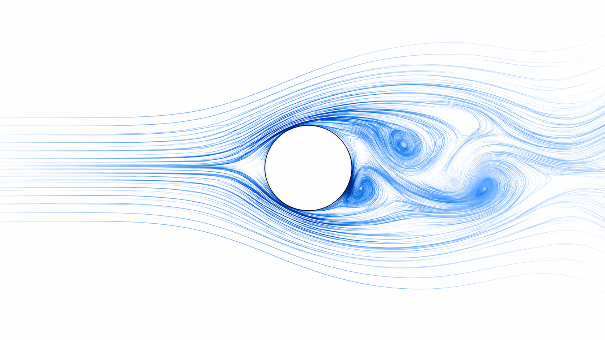

Bachelor's Thesis
My undergraduate project and a little piece of engineering history.
ACADEMIC PROJECT

a chemical engineer exploring computational methods, scientific ideas and the little details behind how things work.
currently doing my master's · learning as I go ·
Projects, coursework, experiments and little discoveries.
My undergraduate project and a little piece of engineering history.
ACADEMIC PROJECT
Interesting assignments, concepts and things I'm learning along the way.
ACADEMIC NOTES
Side projects, random ideas and things I make out of curiosity.
JUST FOR FUN
I'm Lucía, a Chemical Engineer from Spain currently pursuing
my MSc in Chemical Engineering at TU Delft, focusing on
process modelling and simulation. I enjoy exploring how
transport phenomena, thermodynamics and scientific computing
come together to explain how real systems behave.
Before moving to the Netherlands, I worked on reduced-order
multiphysics modelling of catalytic reactors for my Bachelor's
thesis and gained hands-on process engineering experience in
industry. This website is a small space to document projects,
simulations and ideas I explore along the way.
CURRENTLY
MSc Chemical Engineering
TU Delft · Modelling track
BACKGROUND
BSc Chemical Engineering
University of Zaragoza
TOOLS & CODE
Python · MATLAB / Simulink · Aspen · DWSIM · LaTeX
INTERESTS
Process simulation · Reactor modelling · Numerical methods